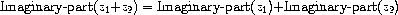
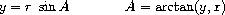

2.4 Multiple Representations for Abstract Data
2.4 抽象的データに対する複数の表現
We have introduced data abstraction, a methodology for structuring systems in such a way that much of a program can be specified independent of the choices involved in implementing the data objects that the program manipulates. For example, we saw in section 2.1.1 how to separate the task of designing a program that uses rational numbers from the task of implementing rational numbers in terms of the computer language's primitive mechanisms for constructing compound data. The key idea was to erect an abstraction barrier -- in this case, the selectors and constructors for rational numbers (make-rat, numer, denom) -- that isolates the way rational numbers are used from their underlying representation in terms of list structure. A similar abstraction barrier isolates the details of the procedures that perform rational arithmetic (add-rat, sub-rat, mul-rat, and div-rat) from the ``higher-level'' procedures that use rational numbers. The resulting program has the structure shown in figure 2.1.
私たちは、データ抽象化を導入した——つまり、プログラムが操作するデータオブジェクトを実装するのに伴う選択とは関わりなく、プログラムの大部分を細かく規定できるような方法で、システムを構造化するための方法論を、導入した。 たとえば、複合的データを構築するための、コンピュータ言語の原始的な仕組みを使って有理数を実装するという課題から、有理数を使うプログラムを設計するという課題を切り離す方法を、2.1.1節で見た。 鍵となる考え方は、有理数の基礎をなしている、リスト構造を使った表現から、有理数の使われ方を隔離する、抽象化の防壁——この場合だと、有理数用のセレクタとコンストラクタ (make-rat と numer と denom) ——を築くことだった。 同様の抽象化の防壁が、有理数の算術演算を実行する手続き (add-rat と sub-rat と mul-rat と div-rat) の詳細を、有理数を使用する「より高い水準の」手続きから、隔離している。 結果として生じるプログラムは、図2.1に示す構造を有する。
These data-abstraction barriers are powerful tools for controlling complexity. By isolating the underlying representations of data objects, we can divide the task of designing a large program into smaller tasks that can be performed separately. But this kind of data abstraction is not yet powerful enough, because it may not always make sense to speak of ``the underlying representation'' for a data object.
これらのデータ抽象化の防壁は、複雑さを抑えるための強力な手立てである。 データオブジェクトの、根底にある表現を隔離することで、大きなプログラムを設計するという課題を、別々に実行できる、より小さないくつかの課題へと、分割できるのだ。 しかし、この種のデータ抽象化は、まだ十分に強力ではない。というのも、データオブジェクトの「根底にある表現」について語ることが、常に意味を持つとは限らないからだ。
For one thing, there might be more than one useful representation for a data object, and we might like to design systems that can deal with multiple representations. To take a simple example, complex numbers may be represented in two almost equivalent ways: in rectangular form (real and imaginary parts) and in polar form (magnitude and angle). Sometimes rectangular form is more appropriate and sometimes polar form is more appropriate. Indeed, it is perfectly plausible to imagine a system in which complex numbers are represented in both ways, and in which the procedures for manipulating complex numbers work with either representation.
理由の一つは、あるデータオブジェクトのための有用な表現が、一つより多く存在するかもしれず、そのため、複数の表現を扱えるシステムを設計したい、と私たちが思うかもしれない、ということである。 簡単な例をとると、複素数は、二つのほとんど等価な方法で——つまり、直交形式 (実部と虚部) と極形式 (大きさと角度) で——表現されうる。 ときには、直交形式の方がより適切であり、ときには、極形式の方がより適切である。 複素数が双方のやり方で表現されていて、かつ、複素数を操作するための手続きが、どちらの表現を使っても動作する、といったシステムを想像することは、実際、完璧に尤もらしいことである。
More importantly, programming systems are often designed by many people working over extended periods of time, subject to requirements that change over time. In such an environment, it is simply not possible for everyone to agree in advance on choices of data representation. So in addition to the data-abstraction barriers that isolate representation from use, we need abstraction barriers that isolate different design choices from each other and permit different choices to coexist in a single program. Furthermore, since large programs are often created by combining pre-existing modules that were designed in isolation, we need conventions that permit programmers to incorporate modules into larger systems additively, that is, without having to redesign or reimplement these modules.
さらに重要なことには、プログラミング・システムは、しばしば、長期間にわたって働く大勢の人たちによって、設計されるのだ——しかも、時間とともに変化する要件に従って。 そんな環境では、全員が前もってデータ表現の選択について同意することは、単純に不可能だ。 だから、使用から表現を隔離するデータ抽象化の防壁に加えて、さらに、異なる設計の選択肢同士をお互いから隔離しつつも異なる選択肢が単一のプログラムの中に共存することを許すような抽象化の防壁も、必要である。 さらに、大きなプログラムはしばしば、隔離されて設計された既存のモジュール同士を組み合わせることによって作成されるため、プログラマがモジュールをより大きなシステムに加法的に——つまりそれらのモジュールを設計しなおしたり、あるいは、実装しなおしたりする必要なしに——組み込むこむことを許すような習慣も必要だ。
In this section, we will learn how to cope with data that may be represented in different ways by different parts of a program. This requires constructing generic procedures -- procedures that can operate on data that may be represented in more than one way. Our main technique for building generic procedures will be to work in terms of data objects that have type tags, that is, data objects that include explicit information about how they are to be processed. We will also discuss data-directed programming, a powerful and convenient implementation strategy for additively assembling systems with generic operations.
本節では、プログラムの異なる部分により異なる方法で表現される可能性のあるデータへの対処の仕方を学ぼう。 これには、総称的手続き——ひとつより多い方法で表現される可能性のあるデータ上で動作できる手続き——を構築することが必要だ。 総称的手続きを構築するための主要な技法は、型タグのあるデータオブジェクト——つまり、どう処理すべきものなのかについての明示的情報を含むデータオブジェクト——を使って作業することであろう。 データ指向プログラミング——総称的な演算を用いてシステムを加法的に組み立てるための、強力で便利な実装戦略——についても、議論しよう。
We begin with the simple complex-number example. We will see how type tags and data-directed style enable us to design separate rectangular and polar representations for complex numbers while maintaining the notion of an abstract ``complex-number'' data object. We will accomplish this by defining arithmetic procedures for complex numbers (add-complex, sub-complex, mul-complex, and div-complex) in terms of generic selectors that access parts of a complex number independent of how the number is represented. The resulting complex-number system, as shown in figure 2.19, contains two different kinds of abstraction barriers. The ``horizontal'' abstraction barriers play the same role as the ones in figure 2.1. They isolate ``higher-level'' operations from ``lower-level'' representations. In addition, there is a ``vertical'' barrier that gives us the ability to separately design and install alternative representations.
単純な複素数の例から始める。 抽象的な「複素数の」データオブジェクトという概念を保ちながらも、複素数の、直交表現と極表現という別々の表現を設計することが、型タグとデータ指向スタイルとによって、いかにして可能となるのか、ということを見ていこう。 その数がどう表現されているのかということには関係なく、複素数の構成部分にアクセスするような、総称的なセレクタを使って、複素数用の算術手続き (add-complex と sub-complex と mul-complex と div-complex) を定義することにより、以上のような設計を達成しよう。 結果としてできあがる複素数のシステムは、図2.19に示すように、二種類の異なる抽象化の防壁を含む。 「横方向の」抽象化の防壁は、図2.1の者と同様の役目を果たす。 これらは、「低レベルの」表現から、「高レベルの」演算を隔離する。 さらに、代替表現同士を別々に設計してインストールすることを可能にしてくれる、「縦方向の」防壁がある。

In section 2.5 we will show how to use type tags and data-directed style to develop a generic arithmetic package. This provides procedures (add, mul, and so on) that can be used to manipulate all sorts of ``numbers'' and can be easily extended when a new kind of number is needed. In section 2.5.3, we'll show how to use generic arithmetic in a system that performs symbolic algebra.
総称的算術パッケージを開発するために、どのようにして型タグとデータ指向スタイルを使うのか、ということを2.5節で示そう。 このときに、あらゆる種類の「数」を操作するのに使えて、かつ、新たな種類の数が必要になったら簡単に拡張できるような、諸手続き (add や mul など) を示す。 2.5.3節では、記号代数を実行するシステムにおいてどのように総称的算術を使うのか、ということを示そう。
2.4.1 Representations for Complex Numbers
2.4.1 複素数の表現
We will develop a system that performs arithmetic operations on complex numbers as a simple but unrealistic example of a program that uses generic operations. We begin by discussing two plausible representations for complex numbers as ordered pairs: rectangular form (real part and imaginary part) and polar form (magnitude and angle).43 Section 2.4.2 will show how both representations can be made to coexist in a single system through the use of type tags and generic operations.
総称的演算を使うプログラムの、簡潔だが非現実的な例として、複素数上の算術演算を行うシステムを開発しよう。 順序付きの対としての、複素数の二つのもっともらしい表現——直交形式 (実部と虚部) と、極形式 (大きさと角度) ——について議論することから始める43。 2.4.2節では、型タグと総称的演算を使うことを通じて、双方の表現をどのようにして単一のシステム内に共存させられるのか、ということを示そう。
Like rational numbers, complex numbers are naturally represented as ordered pairs. The set of complex numbers can be thought of as a two-dimensional space with two orthogonal axes, the ``real'' axis and the ``imaginary'' axis. (See figure 2.20.) From this point of view, the complex number z = x + iy (where i2 = - 1) can be thought of as the point in the plane whose real coordinate is x and whose imaginary coordinate is y. Addition of complex numbers reduces in this representation to addition of coordinates:
有理数と同様に、複素数は、当然に順序付きの対として表現される。 複素数の集合は、二つの直交する軸——つまり、「実」軸と「虚」軸——のある二次元空間だと見なせる。 (図2.20を見よ。) この観点からは、 z = x + iy という複素数 (ここで i2 = −1 である) は、この平面における、実座標が x で虚座標が y の点である、と見なせる。 複素数同士の加算は、この表現では、座標同士の加算に帰着する。


When multiplying complex numbers, it is more natural to think in terms of representing a complex number in polar form, as a magnitude and an angle (r and A in figure 2.20). The product of two complex numbers is the vector obtained by stretching one complex number by the length of the other and then rotating it through the angle of the other:
複素数同士を掛けるときには、複素数を極形式で——大きさと角度 (図2.20の r と A) として——表現することを考えるのが、より自然である。 二つの複素数の積は、一方の複素数を、他方の長さ倍に引き伸ばしてから、他方の角度のぶんだけ回転させることで得られる、ベクトルである。

Thus, there are two different representations for complex numbers, which are appropriate for different operations. Yet, from the viewpoint of someone writing a program that uses complex numbers, the principle of data abstraction suggests that all the operations for manipulating complex numbers should be available regardless of which representation is used by the computer. For example, it is often useful to be able to find the magnitude of a complex number that is specified by rectangular coordinates. Similarly, it is often useful to be able to determine the real part of a complex number that is specified by polar coordinates.
このように、複素数には二つの異なる表現があり、それらは異なる演算に適している。 それでもやはり、複素数を使うプログラムを書く誰か、という観点からすると、複素数を操作するためのすべての演算は、コンピュータがどの表現を使っているのかに関係なく利用可能であるべきだ、ということを、データ抽象化の原則は示唆している。 たとえば、直交座標で指定された複素数の大きさを知ることができる、ということが有益な場合が、よくある。 同様に、極座標で指定された複素数の実部を特定できる、ということが有益な場合が、よくある。

To design such a system, we can follow the same data-abstraction strategy we followed in designing the rational-number package in section 2.1.1. Assume that the operations on complex numbers are implemented in terms of four selectors: real-part, imag-part, magnitude, and angle. Also assume that we have two procedures for constructing complex numbers: make-from-real-imag returns a complex number with specified real and imaginary parts, and make-from-mag-ang returns a complex number with specified magnitude and angle. These procedures have the property that, for any complex number z, both
そういうシステムを設計するために、私たちは、2.1.1節で有理数パッケージを設計する際にしたがったのと同じデータ抽象化戦略に、したがうことができる。 複素数上の演算が、四つのセレクタ——real-part と imag-part と magnitude と angle——を用いて実装される、と仮定せよ。 また、複素数を構築するための二つの手続きがある——すなわち、make-from-real-imag は、指定された実部と虚部を有する複素数を返し、make-from-mag-ang は、指定された大きさと角度を有する複素数を返す——と、仮定せよ。 これらの手続きには、任意の複素数 z に対して、以下の性質がある。すなわち、
(make-from-real-imag (real-part z) (imag-part z))
and
および
(make-from-mag-ang (magnitude z) (angle z))
produce complex numbers that are equal to z.
の双方とも、z に等しい複素数を作り出す。
Using these constructors and selectors, we can implement arithmetic on complex numbers using the ``abstract data'' specified by the constructors and selectors, just as we did for rational numbers in section 2.1.1. As shown in the formulas above, we can add and subtract complex numbers in terms of real and imaginary parts while multiplying and dividing complex numbers in terms of magnitudes and angles:
これらのコンストラクタとセレクタを使って、私たちは、コンストラクタとセレクタにより指定される「抽象的データ」を用いた複素数上の算術演算を、2.1.1節で有理数に対して行ったのとちょうど同じようにして、実装することができる。 上記の式に示したように、実部と虚部を使って複素数を足したり引いたりする一方で、大きさと角度を使って複素数を掛けたり割ったりすることが、可能である。
(define (add-complex z1 z2) (make-from-real-imag (+ (real-part z1) (real-part z2)) (+ (imag-part z1) (imag-part z2)))) (define (sub-complex z1 z2) (make-from-real-imag (- (real-part z1) (real-part z2)) (- (imag-part z1) (imag-part z2)))) (define (mul-complex z1 z2) (make-from-mag-ang (* (magnitude z1) (magnitude z2)) (+ (angle z1) (angle z2)))) (define (div-complex z1 z2) (make-from-mag-ang (/ (magnitude z1) (magnitude z2)) (- (angle z1) (angle z2))))
To complete the complex-number package, we must choose a representation and we must implement the constructors and selectors in terms of primitive numbers and primitive list structure. There are two obvious ways to do this: We can represent a complex number in ``rectangular form'' as a pair (real part, imaginary part) or in ``polar form'' as a pair (magnitude, angle). Which shall we choose?
複素数パッケージを完成させるには、表現を選ばねばならないし、原始的な数と原始的なリスト構造を使って、コンストラクタとセレクタを実装せねばならない。 これを行うには、二つの自明な方法がある——複素数を、「直交形式」で対 (実部と虚部) として表現すること、あるいは、「極形式」で対 (大きさと角度) として表現することが、可能である。 どちらを選ぶべきだろう?
In order to make the different choices concrete, imagine that there are two programmers, Ben Bitdiddle and Alyssa P. Hacker, who are independently designing representations for the complex-number system. Ben chooses to represent complex numbers in rectangular form. With this choice, selecting the real and imaginary parts of a complex number is straightforward, as is constructing a complex number with given real and imaginary parts. To find the magnitude and the angle, or to construct a complex number with a given magnitude and angle, he uses the trigonometric relations
異なる選択肢を具体的にするために、ベン・ビットディドルとアリッサ・P・ハッカという、二人のプログラマがいて、二人は複素数システムのための表現を互いに無関係に設計している、と想像しよう。 ベンは、複素数を直交形式で表現することにする。 この選択では、複素数の実部と虚部を選ぶことは単純だ——与えられた実部と虚部を有する複素数を構築することが単純なのと同様に。 大きさと角度を知るには、あるいは、与えられた大きさと角度を有する複素数を構築するには、彼は、以下のような三角関数による関係を用いる。

which relate the real and imaginary parts (x, y) to the magnitude and the angle (r, A).44 Ben's representation is therefore given by the following selectors and constructors:
——これらは、実部と虚部 (x, y) を、大きさと角度 (r, A) に関連づける44。 したがって、ベンの表現は、以下のセレクタとコンストラクタにより与えられる。
(define (real-part z) (car z)) (define (imag-part z) (cdr z)) (define (magnitude z) (sqrt (+ (square (real-part z)) (square (imag-part z))))) (define (angle z) (atan (imag-part z) (real-part z))) (define (make-from-real-imag x y) (cons x y)) (define (make-from-mag-ang r a) (cons (* r (cos a)) (* r (sin a))))
Alyssa, in contrast, chooses to represent complex numbers in polar form. For her, selecting the magnitude and angle is straightforward, but she has to use the trigonometric relations to obtain the real and imaginary parts. Alyssa's representation is:
それに対してアリッサは、極形式で複素数を表現することにする。 彼女にとって、大きさと角度を選ぶことは単純だが、実部と虚部を得るには三角関数の関係を使わなくてはならない。 アリッサの表現は以下のとおりだ。
(define (real-part z) (* (magnitude z) (cos (angle z)))) (define (imag-part z) (* (magnitude z) (sin (angle z)))) (define (magnitude z) (car z)) (define (angle z) (cdr z)) (define (make-from-real-imag x y) (cons (sqrt (+ (square x) (square y))) (atan y x))) (define (make-from-mag-ang r a) (cons r a))
The discipline of data abstraction ensures that the same implementation of add-complex, sub-complex, mul-complex, and div-complex will work with either Ben's representation or Alyssa's representation.
add-complex と sub-complex と mul-complex と div-complex についての同じ実装が、ベンの表現とアリッサの表現のいずれを使った場合にもちゃんと動く、ということを、データ抽象化の規律は保証する。
2.4.2 Tagged data
2.4.2 タグ付けされたデータ
One way to view data abstraction is as an application of the ``principle of least commitment.'' In implementing the complex-number system in section 2.4.1, we can use either Ben's rectangular representation or Alyssa's polar representation. The abstraction barrier formed by the selectors and constructors permits us to defer to the last possible moment the choice of a concrete representation for our data objects and thus retain maximum flexibility in our system design.
データ抽象化の一つの眺め方は、「最小の関わりの原則」の適用として、というものである。 2.4.1節で複素数システムを実装する際には、ベンの直交表現またはアリッサの極表現を使うことができる。 セレクタとコンストラクタにより形成される抽象化の防壁のおかげで、自分のデータオブジェクト用の具体的な表現の選択を、可能な限り最後の時点まで延期することができ、ゆえに、自分のシステム設計において最大限の柔軟性を保ち続けることができる。
The principle of least commitment can be carried to even further extremes. If we desire, we can maintain the ambiguity of representation even after we have designed the selectors and constructors, and elect to use both Ben's representation and Alyssa's representation. If both representations are included in a single system, however, we will need some way to distinguish data in polar form from data in rectangular form. Otherwise, if we were asked, for instance, to find the magnitude of the pair (3,4), we wouldn't know whether to answer 5 (interpreting the number in rectangular form) or 3 (interpreting the number in polar form). A straightforward way to accomplish this distinction is to include a type tag -- the symbol rectangular or polar -- as part of each complex number. Then when we need to manipulate a complex number we can use the tag to decide which selector to apply.
最小の関わりの原則を、もっと極端なところまで推し進めることさえ可能だ。 私たちは、もし望むならば、セレクタとコンストラクタを設計した後でさえも、表現の曖昧性を保てるし、ベンの表現およびアリッサの表現の双方を、使うことに決めることもできる。 しかし、もし単一のシステム内に双方の表現が含まれていたら、極形式のデータを直交形式のデータと区別するための、何らかの方法が必要になるだろう。 さもなければ、もし、たとえば (3, 4) という対の magnitude を求めてほしいと言われたら、私たちは、5 と答える (数を直交形式で解釈する) べきか、それとも 3 と答える (数を極形式で解釈する) べきかが、分からないだろう。 この区別を成し遂げるための単純な方法は、型タグ——rectangular または polar という記号——を、各複素数の一部として含めることである。 すると、複素数を操作しなくてはならないときには、私たちは、どちらのセレクタを適用すべきかを決めるためにタグを使える。
In order to manipulate tagged data, we will assume that we have procedures type-tag and contents that extract from a data object the tag and the actual contents (the polar or rectangular coordinates, in the case of a complex number). We will also postulate a procedure attach-tag that takes a tag and contents and produces a tagged data object. A straightforward way to implement this is to use ordinary list structure:
タグ付けされたデータを操作するために、タグと実際の中身 (複素数の場合は、極座標または直交座標) をデータオブジェクトから抽出する、type-tag および contents という手続きがあるものとしよう。 また、タグと中身をもらって、タグ付けされたデータオブジェクトを作り出す、attach-tag という手続きも、仮定しておこう。 これを実装する単純な方法は、普通のリスト構造を使うことである。
(define (attach-tag type-tag contents) (cons type-tag contents)) (define (type-tag datum) (if (pair? datum) (car datum) (error "Bad tagged datum -- TYPE-TAG" datum))) (define (contents datum) (if (pair? datum) (cdr datum) (error "Bad tagged datum -- CONTENTS" datum)))
Using these procedures, we can define predicates rectangular? and polar?, which recognize polar and rectangular numbers, respectively:
これらの手続きを使うと、rectangular? および polar? という述語——それぞれ、直交形式の数と極形式の数を認識する——を定義できる。 (respectively とあるので、述べる順が揃っていないと変なのだが、逆順になっている。おそらく原文の書き間違い。)
(define (rectangular? z) (eq? (type-tag z) 'rectangular)) (define (polar? z) (eq? (type-tag z) 'polar))
With type tags, Ben and Alyssa can now modify their code so that their two different representations can coexist in the same system. Whenever Ben constructs a complex number, he tags it as rectangular. Whenever Alyssa constructs a complex number, she tags it as polar. In addition, Ben and Alyssa must make sure that the names of their procedures do not conflict. One way to do this is for Ben to append the suffix rectangular to the name of each of his representation procedures and for Alyssa to append polar to the names of hers. Here is Ben's revised rectangular representation from section 2.4.1:
さて、型タグを使って、ベンとアリッサは、同じシステム内に自分たちの二つの異なるコードが共存できるように、自分たちのコードを修正できる。 ベンは、複素数を構築するときはいつでも、その複素数を、直交形式だとタグ付けする。 アリッサは、複素数を構築するときはいつでも、その複素数を、極形式だとタグ付けする。 さらに、ベンとアリッサは、自分たちの手続きの名前が重ならないことを保証せねばならない。 こうするための一つの方法は、ベンが、自分の表現手続きの各々の名前に rectangular という接尾辞を付加し、アリッサが、自分の表現手続きの名前に polar と付加することである。 ここに、2.4.1節から改変した後の、ベンの直交表現を示す。
(define (real-part-rectangular z) (car z)) (define (imag-part-rectangular z) (cdr z)) (define (magnitude-rectangular z) (sqrt (+ (square (real-part-rectangular z)) (square (imag-part-rectangular z))))) (define (angle-rectangular z) (atan (imag-part-rectangular z) (real-part-rectangular z))) (define (make-from-real-imag-rectangular x y) (attach-tag 'rectangular (cons x y))) (define (make-from-mag-ang-rectangular r a) (attach-tag 'rectangular (cons (* r (cos a)) (* r (sin a)))))
and here is Alyssa's revised polar representation:
そして、ここに、アリッサの改変後の極表現を示す。
(define (real-part-polar z) (* (magnitude-polar z) (cos (angle-polar z)))) (define (imag-part-polar z) (* (magnitude-polar z) (sin (angle-polar z)))) (define (magnitude-polar z) (car z)) (define (angle-polar z) (cdr z)) (define (make-from-real-imag-polar x y) (attach-tag 'polar (cons (sqrt (+ (square x) (square y))) (atan y x)))) (define (make-from-mag-ang-polar r a) (attach-tag 'polar (cons r a)))
Each generic selector is implemented as a procedure that checks the tag of its argument and calls the appropriate procedure for handling data of that type. For example, to obtain the real part of a complex number, real-part examines the tag to determine whether to use Ben's real-part-rectangular or Alyssa's real-part-polar. In either case, we use contents to extract the bare, untagged datum and send this to the rectangular or polar procedure as required:
総称的なセレクタの各々は、そのセレクタへの引数のタグを検査して、その型のデータを扱うための適宜の手続きを呼び出すような手続きとして、実装される。 たとえば、複素数の実部を得るために、real-part は、タグを調べて、ベンの real-part-rectangular を使うべきか、それともアリッサの real-part-polar を使うべきかを決定する。 いずれの場合でも、私たちは、裸の、タグ付けされていないデータを抜き出すために contents を使い、このデータを、求められるとおりに、直交形式用の手続きか、または極形式用の手続きへと、送り出す。
(define (real-part z) (cond ((rectangular? z) (real-part-rectangular (contents z))) ((polar? z) (real-part-polar (contents z))) (else (error "Unknown type -- REAL-PART" z)))) (define (imag-part z) (cond ((rectangular? z) (imag-part-rectangular (contents z))) ((polar? z) (imag-part-polar (contents z))) (else (error "Unknown type -- IMAG-PART" z)))) (define (magnitude z) (cond ((rectangular? z) (magnitude-rectangular (contents z))) ((polar? z) (magnitude-polar (contents z))) (else (error "Unknown type -- MAGNITUDE" z)))) (define (angle z) (cond ((rectangular? z) (angle-rectangular (contents z))) ((polar? z) (angle-polar (contents z))) (else (error "Unknown type -- ANGLE" z))))
To implement the complex-number arithmetic operations, we can use the same procedures add-complex, sub-complex, mul-complex, and div-complex from section 2.4.1, because the selectors they call are generic, and so will work with either representation. For example, the procedure add-complex is still
複素数の算術演算を実装するために、私たちは、2.4.1のと同じ、add-complex と sub-complex と mul-complex と div-complex という手続きを、使うことができる。というのも、これらの手続きが呼び出すセレクタは、総称的であり、そのため、どちらの表現に対してもちゃんと動くからである。 たとえば、add-complex という手続きは、依然として、以下のとおりのままである。
(define (add-complex z1 z2) (make-from-real-imag (+ (real-part z1) (real-part z2)) (+ (imag-part z1) (imag-part z2))))
Finally, we must choose whether to construct complex numbers using Ben's representation or Alyssa's representation. One reasonable choice is to construct rectangular numbers whenever we have real and imaginary parts and to construct polar numbers whenever we have magnitudes and angles:
最後に、私たちは、ベンの表現を使って複素数を構築するのか、それとも、アリッサの表現を使って複素数を構築するのかを、選ばなくてはならない。 理にかなった一つの選択は、実部と虚部が分かっているときはいつでも直交形式の数を構築し、かつ、大きさと角度が分かっているときはいつでも極形式の数を構築する、という方法だ。
(define (make-from-real-imag x y) (make-from-real-imag-rectangular x y)) (define (make-from-mag-ang r a) (make-from-mag-ang-polar r a))

The resulting complex-number system has the structure shown in figure 2.21. The system has been decomposed into three relatively independent parts: the complex-number-arithmetic operations, Alyssa's polar implementation, and Ben's rectangular implementation. The polar and rectangular implementations could have been written by Ben and Alyssa working separately, and both of these can be used as underlying representations by a third programmer implementing the complex-arithmetic procedures in terms of the abstract constructor/selector interface.
できあがった複素数システムには、図2.21に示すような構造がある。 システムは、比較的独立した三つの部分へと分解された——すなわち、複素数算術演算と、アリッサの極形式の実装と、ベンの直交形式の実装である。 極形式と直交形式の実装は、別々に働いているベンとアリッサによって書かれ得ただろうし、これらの実装の双方は、抽象的なコンストラクタ/セレクタというインタフェイスを使って複素数算術手続きを実装する第三者のプログラマによって、根底にある表現として使われ得る。
Since each data object is tagged with its type, the selectors operate on the data in a generic manner. That is, each selector is defined to have a behavior that depends upon the particular type of data it is applied to. Notice the general mechanism for interfacing the separate representations: Within a given representation implementation (say, Alyssa's polar package) a complex number is an untyped pair (magnitude, angle). When a generic selector operates on a number of polar type, it strips off the tag and passes the contents on to Alyssa's code. Conversely, when Alyssa constructs a number for general use, she tags it with a type so that it can be appropriately recognized by the higher-level procedures. This discipline of stripping off and attaching tags as data objects are passed from level to level can be an important organizational strategy, as we shall see in section 2.5.
各データオブジェクトが型でタグ付けされているため、セレクタは、そのデータ上で総称的なやり方で動作する。 つまり、各セレクタは、そのセレクタが適用されるデータの、特定の型に依存する振る舞いをするように、定義される。 別々の表現同士の間のインタフェイスをとるための、一般的な仕組みに注意せよ——与えられた表現実装 (たとえば、アリッサの極形式のパッケージ) の内部では、複素数は、型のない対 (大きさと角度) なのだ。 総称的なセレクタは、polar 型の数の上で動作するとき、タグを剥ぎ取って、中身をアリッサのコードに渡す。 逆に、一般的用途のためにアリッサが数を構築するときには、アリッサは、より高いレベルの手続きによりその数が適切に認識されるように、その数を型でタグ付けする。 データオブジェクトがレベルからレベルへと受け渡されるのにつれて、タグを剥ぎ取ったり取りつけたりする、というこの規律は、重要な組織立ての戦略になり得る——2.5節で見ることになるとおり。
2.4.3 Data-Directed Programming and Additivity
2.4.3 データ指向プログラミングと加法性
The general strategy of checking the type of a datum and calling an appropriate procedure is called dispatching on type. This is a powerful strategy for obtaining modularity in system design. On the other hand, implementing the dispatch as in section 2.4.2 has two significant weaknesses. One weakness is that the generic interface procedures (real-part, imag-part, magnitude, and angle) must know about all the different representations. For instance, suppose we wanted to incorporate a new representation for complex numbers into our complex-number system. We would need to identify this new representation with a type, and then add a clause to each of the generic interface procedures to check for the new type and apply the appropriate selector for that representation.
データの型を調べて適切な手続きを呼び出す、という一般的な戦略は、型による振り分けと呼ばれる。 これは、システム設計においてモジュール性を獲得するための、強力な戦略である。 一方、2.4.2節のように振り分けを実装することには、二つの重大な弱点がある。 一つの弱点は、総称的なインタフェイス手続き (real-part と imag-part と magnitude と angle) が、すべての異なる表現について知っていなくてはならない、という点だ。 たとえば、私たちの複素数システムに、複素数用の新たな表現を組み込みたいのだ、と仮定しよう。 この新たな表現を、ある型だと同定する必要があるだろうし、さらに、その新たな型なのかを調べてその表現に適したセレクタを適用するために、総称的なインタフェイス手続きの各々に節を追加する必要があるだろう。
Another weakness of the technique is that even though the individual representations can be designed separately, we must guarantee that no two procedures in the entire system have the same name. This is why Ben and Alyssa had to change the names of their original procedures from section 2.4.1.
当技法のもう一つの弱点は、たとえ個々の表現を別々に設計できるのであってさえも、全システム内のどの二つの手続きも同じ名前ではないということを保証しなくてはならない、という点だ。 このことは、なぜベンとアリッサが、2.4.1節以来の自分たちの元の手続きの名前を変えなくてはならなかったのか、ということの理由である。
The issue underlying both of these weaknesses is that the technique for implementing generic interfaces is not additive. The person implementing the generic selector procedures must modify those procedures each time a new representation is installed, and the people interfacing the individual representations must modify their code to avoid name conflicts. In each of these cases, the changes that must be made to the code are straightforward, but they must be made nonetheless, and this is a source of inconvenience and error. This is not much of a problem for the complex-number system as it stands, but suppose there were not two but hundreds of different representations for complex numbers. And suppose that there were many generic selectors to be maintained in the abstract-data interface. Suppose, in fact, that no one programmer knew all the interface procedures or all the representations. The problem is real and must be addressed in such programs as large-scale data-base-management systems.
これらの弱点双方の背後にある問題は、総称的なインタフェイスを実装するための技法が加法的ではないことである。 総称的なセレクタ手続きを実装する人は、新しい表現が取り入れられるたびに、それらの手続きを修正せねばならないし、個々の表現をインタフェイスでつなぐ人たちは、名前の衝突を避けるために、自分たちのコードを修正せねばならない。 これらの状況のそれぞれにおいて、コードに対してしなくてはならない変更は、単純ではあるが、それでもやはり、しなくてはならないのであり、そして、このことが、不便とエラーの源なのだ。 これは、現状の複素数システムにとっては大した問題ではないが、複素数に対して二つどころか何百もの異なる表現があった、と仮定してみたまえ。 そして、抽象データインタフェイスのうちには、保守すべき総称的セレクタがたくさんあった、と仮定してみたまえ。 この問題は、現実的だし、大規模データベース管理システムのようなプログラムでは、対処しなくてはならないものである。
What we need is a means for modularizing the system design even further. This is provided by the programming technique known as data-directed programming. To understand how data-directed programming works, begin with the observation that whenever we deal with a set of generic operations that are common to a set of different types we are, in effect, dealing with a two-dimensional table that contains the possible operations on one axis and the possible types on the other axis. The entries in the table are the procedures that implement each operation for each type of argument presented. In the complex-number system developed in the previous section, the correspondence between operation name, data type, and actual procedure was spread out among the various conditional clauses in the generic interface procedures. But the same information could have been organized in a table, as shown in figure 2.22.
必要なのは、システム設計をさらにモジュール化するための手段である。 これは、データ指向プログラミングとして知られるプログラミング技法により、与えられる。 データ指向プログラミングがどのようにしてうまく動くのか、ということを理解するために、このような観察から始めよう——すなわち、私たちは、異なる型の一揃いに対して共通な総称的演算の一揃いを扱うときにはいつでも、実際のところ、一方の軸に沿って可能な演算を含み、かつ、他方の軸に沿って可能な型を含むような、二次元の表を扱っているのである。 この表のエントリは、それぞれの型の、提示されている引数のための各演算を、実装する手続きである。 前節で開発した複素数システムでは、演算名と、データ型と、実際の手続きとの間の対応関係は、総称的なインタフェイス手続きの中の様々な条件節の間に蔓延していた。 しかし、同じ情報は、表にまとめられ得たのだ——図2.22に示すとおり。
Data-directed programming is the technique of designing programs to work with such a table directly. Previously, we implemented the mechanism that interfaces the complex-arithmetic code with the two representation packages as a set of procedures that each perform an explicit dispatch on type. Here we will implement the interface as a single procedure that looks up the combination of the operation name and argument type in the table to find the correct procedure to apply, and then applies it to the contents of the argument. If we do this, then to add a new representation package to the system we need not change any existing procedures; we need only add new entries to the table.
データ指向プログラミングは、こういう表を直接使って動くように、プログラムを設計する技法だ。 以前、私たちは、複素数算術のコードを二つの表現パッケージにインタフェイスでつなぐ仕組みを、型による振り分けをそれぞれが明示的に行うような一群の手続きとして、実装した。 ここでは、適用すべき正しい手続きを見つけるために、演算名と引数の型の組み合わせを表で調べて、それからその手続きを引数の中身に適用するような、単一の手続きとして、インタフェイスを実装しよう。 もしこうすれば、システムに新たな表現パッケージを追加するために、既存のどの手続きも変更しなくてよい——ただ、表に新たなエントリを加えるだけでよいのだ。

To implement this plan, assume that we have two procedures, put and get, for manipulating the operation-and-type table:
この計画を実装するために、put と get という二つの手続き——演算・型の表を操作するためのもの——がある、と仮定しよう。
- (put <op> <type> <item>)
installs the <item> in the table, indexed by the <op> and the <type>. - (get <op> <type>)
looks up the <op>, <type> entry in the table and returns the item found there. If no item is found, get returns false.
- (put <op> <type> <item>) は、表に <item> を取り込み、これは、<op> と the <type> で索引づけられる。
- (get <op> <type>) は、表内の、<op>, <type> のエントリを調べて、そこで見つかったものを返す。もし何も見つからなかったら、get は偽を返す。
For now, we can assume that put and get are included in our language. In chapter 3 (section 3.3.3, exercise 3.24) we will see how to implement these and other operations for manipulating tables.
これからは、私たちの言語に put と get が含まれている、と仮定できる。 3章 (3.3.3節の練習問題3.24) では、put と get および表を操作するための他の演算をどう実装するのかを見ることにしよう。
Here is how data-directed programming can be used in the complex-number system. Ben, who developed the rectangular representation, implements his code just as he did originally. He defines a collection of procedures, or a package, and interfaces these to the rest of the system by adding entries to the table that tell the system how to operate on rectangular numbers. This is accomplished by calling the following procedure:
複素数システムにおいてデータ指向プログラミングをどのように使えるか、ということを、ここに示す。 ベン——直交表現を開発した——は、自分のコードを、最初に開発したのとちょうど同じように、実装する。 彼は、手続きの集まり——つまり、パッケージ——を定義して、そして、直交形式の数の上で動作する方法をシステムに伝える表にエントリを加えることによって、これらの手続きを、システムの残りの部分へと、インタフェイスでつなぐ。 これは、以下の手続きを呼び出すことで、成し遂げられる。
(define (install-rectangular-package) ;; internal procedures (define (real-part z) (car z)) (define (imag-part z) (cdr z)) (define (make-from-real-imag x y) (cons x y)) (define (magnitude z) (sqrt (+ (square (real-part z)) (square (imag-part z))))) (define (angle z) (atan (imag-part z) (real-part z))) (define (make-from-mag-ang r a) (cons (* r (cos a)) (* r (sin a)))) ;; interface to the rest of the system (define (tag x) (attach-tag 'rectangular x)) (put 'real-part '(rectangular) real-part) (put 'imag-part '(rectangular) imag-part) (put 'magnitude '(rectangular) magnitude) (put 'angle '(rectangular) angle) (put 'make-from-real-imag 'rectangular (lambda (x y) (tag (make-from-real-imag x y)))) (put 'make-from-mag-ang 'rectangular (lambda (r a) (tag (make-from-mag-ang r a)))) 'done)
Notice that the internal procedures here are the same procedures from section 2.4.1 that Ben wrote when he was working in isolation. No changes are necessary in order to interface them to the rest of the system. Moreover, since these procedure definitions are internal to the installation procedure, Ben needn't worry about name conflicts with other procedures outside the rectangular package. To interface these to the rest of the system, Ben installs his real-part procedure under the operation name real-part and the type (rectangular), and similarly for the other selectors.45 The interface also defines the constructors to be used by the external system.46 These are identical to Ben's internally defined constructors, except that they attach the tag.
ここでの内部手続きが、2.4.1節でベンが隔離されて働いていたときに書いたものと同じ手続きであることに、注意せよ。 これらの手続きをシステムの残りの部分へとインタフェイスでつなぐためには、何の変更も必要ない。 さらに、これらの手続き定義は、インストレーション手続きの内部のものだから、ベンは、直交表現パッケージの外部の他の手続きとの間での名前の衝突について、心配する必要がない。 これらの手続きをシステムの残りの部分へとインタフェイスでつなぐために、ベンは、自分の real-part という手続きを、real-part という演算名と (rectangular) という型のもとにインストールし、他のセレクタについても同様のことをする45。 インタフェイスは、外部のシステムにより使われるべきコンストラクタをも、定義している46。 これらのコンストラクタは、タグをくっつけるという点を除けば、ベンが内部的に定義したコンストラクタとそっくり同じである。
Alyssa's polar package is analogous:
アリッサの極表現パッケージも同様だ。
(define (install-polar-package) ;; internal procedures (define (magnitude z) (car z)) (define (angle z) (cdr z)) (define (make-from-mag-ang r a) (cons r a)) (define (real-part z) (* (magnitude z) (cos (angle z)))) (define (imag-part z) (* (magnitude z) (sin (angle z)))) (define (make-from-real-imag x y) (cons (sqrt (+ (square x) (square y))) (atan y x))) ;; interface to the rest of the system (define (tag x) (attach-tag 'polar x)) (put 'real-part '(polar) real-part) (put 'imag-part '(polar) imag-part) (put 'magnitude '(polar) magnitude) (put 'angle '(polar) angle) (put 'make-from-real-imag 'polar (lambda (x y) (tag (make-from-real-imag x y)))) (put 'make-from-mag-ang 'polar (lambda (r a) (tag (make-from-mag-ang r a)))) 'done)
Even though Ben and Alyssa both still use their original procedures defined with the same names as each other's (e.g., real-part), these definitions are now internal to different procedures (see section 1.1.8), so there is no name conflict.
ベンとアリッサは、二人とも依然として、お互いのものと同じ名前で定義した、自分の元の手続き (たとえば real-part) を使っているのだが、それでも、これらの定義は今や、異なる手続きの内部にあり (1.1.8節を参照)、よって、名前の衝突はない。
The complex-arithmetic selectors access the table by means of a general ``operation'' procedure called apply-generic, which applies a generic operation to some arguments. Apply-generic looks in the table under the name of the operation and the types of the arguments and applies the resulting procedure if one is present:47
複素数算術のセレクタは、apply-generic と呼ばれる汎用の「演算」手続き——総称的演算を何らかの引数に適用する——を介して、表にアクセスする。 apply-generic は、その演算の名前と引数の型で表を調べて、もし手続きがあれば、結果として得られた手続きを適用する47。 ***
(define (apply-generic op . args) (let ((type-tags (map type-tag args))) (let ((proc (get op type-tags))) (if proc (apply proc (map contents args)) (error "No method for these types -- APPLY-GENERIC" (list op type-tags))))))
Using apply-generic, we can define our generic selectors as follows:
apply-generic を使うと、以下のように総称的なセレクタを定義できる。
(define (real-part z) (apply-generic 'real-part z)) (define (imag-part z) (apply-generic 'imag-part z)) (define (magnitude z) (apply-generic 'magnitude z)) (define (angle z) (apply-generic 'angle z))
Observe that these do not change at all if a new representation is added to the system.
新たな表現がシステムに追加されたとしても、これらがまったく変わらない、ということに気づいてほしい。
We can also extract from the table the constructors to be used by the programs external to the packages in making complex numbers from real and imaginary parts and from magnitudes and angles. As in section 2.4.2, we construct rectangular numbers whenever we have real and imaginary parts, and polar numbers whenever we have magnitudes and angles:
複素数を実部と虚部から作ったり、大きさと角度から作ったりする際に、パッケージの外部のプログラムによって使われるべきコンストラクタを、表から取り出すこともできる。 2.4.2節のとおり、私たちは、実部と虚部を知っているときはいつでも直交形式の数を構築し、大きさと角度を知っているときはいつでも極形式の数を構築する。
(define (make-from-real-imag x y) ((get 'make-from-real-imag 'rectangular) x y)) (define (make-from-mag-ang r a) ((get 'make-from-mag-ang 'polar) r a))
Exercise 2.73. Section 2.3.2 described a program that performs symbolic differentiation:
練習問題 2.73 2.3.2節では、記号微分を行うプログラムについて説明した。
(define (deriv exp var) (cond ((number? exp) 0) ((variable? exp) (if (same-variable? exp var) 1 0)) ((sum? exp) (make-sum (deriv (addend exp) var) (deriv (augend exp) var))) ((product? exp) (make-sum (make-product (multiplier exp) (deriv (multiplicand exp) var)) (make-product (deriv (multiplier exp) var) (multiplicand exp)))) <more rules can be added here> (else (error "unknown expression type -- DERIV" exp))))
We can regard this program as performing a dispatch on the type of the expression to be differentiated. In this situation the ``type tag'' of the datum is the algebraic operator symbol (such as +) and the operation being performed is deriv. We can transform this program into data-directed style by rewriting the basic derivative procedure as
このプログラムを、微分すべき式の型による振り分けを行っているものと見なせる。 この立場では、データの「型タグ」は、(+ などの) 代数的演算子記号であり、実行される演算とは、deriv である。 基本的な微分手続きを次のように書き換えることによって、このプログラムを、データ指向スタイルに変形できる。
(define (deriv exp var) (cond ((number? exp) 0) ((variable? exp) (if (same-variable? exp var) 1 0)) (else ((get 'deriv (operator exp)) (operands exp) var)))) (define (operator exp) (car exp)) (define (operands exp) (cdr exp))
- Explain what was done above. Why can't we assimilate the predicates number? and same-variable? into the data-directed dispatch?
- 上記で行われたことを説明せよ。 なぜ、number? と same-variable? という述語を、データ指向の振り分けに融合することができないのか?
- Write the procedures for derivatives of sums and products, and the auxiliary code required to install them in the table used by the program above.
- 和と積の微分についての手続きを書け。そして、上記のプログラムにより使われる表にそれらの手続きを取り込むために必要な、補助コードを書け。
- Choose any additional differentiation rule that you like, such as the one for exponents (exercise 2.56), and install it in this data-directed system.
- 何でもよいから君の好きな追加の微分規則——たとえば、指数についての微分規則 (練習問題2.56)——を選んで、それを、このデータ指向システムに取り入れよ。
- In this simple algebraic manipulator the type of an expression is the algebraic operator that binds it together. Suppose, however, we indexed the procedures in the opposite way, so that the dispatch line in deriv looked like
- この簡単な代数的操作器では、式の型とは、その式を束ねあげている代数的演算子だ。 しかし、逆のやり方で手続きを索引化して、その結果、deriv 内の振り分けの行が、以下のようになったのだ、と仮定せよ。
((get (operator exp) 'deriv) (operands exp) var)
What corresponding changes to the derivative system are required?
対応するどのような変更が、微分システムに対して必要だろうか?
Exercise 2.74. Insatiable Enterprises, Inc., is a highly decentralized conglomerate company consisting of a large number of independent divisions located all over the world. The company's computer facilities have just been interconnected by means of a clever network-interfacing scheme that makes the entire network appear to any user to be a single computer. Insatiable's president, in her first attempt to exploit the ability of the network to extract administrative information from division files, is dismayed to discover that, although all the division files have been implemented as data structures in Scheme, the particular data structure used varies from division to division. A meeting of division managers is hastily called to search for a strategy to integrate the files that will satisfy headquarters' needs while preserving the existing autonomy of the divisions.
練習問題2.74. 貪欲事業社は、世界中にある多数の独立した部門からなる、とても分権化された複合企業体の会社だ。 この会社のコンピュータ施設は、ネットワーク全体をどのユーザに対しても単一のコンピュータのように見せかける、賢いネットワーク・インタフェイス接続の体系を用いて、ちょうど相互接続されたところだ。 貪欲社の社長は、ネットワークの能力を活用して部門ファイルから経営に関する情報を抽出しようという最初の試みでは、以下のことに気づいて失望する。すなわち、部門ファイルのすべてが、Schemeのデータ構造として既に実装されていたにもかかわらず、使われている特定のデータ構造は、部門ごとに違うのだ。 諸部門の既存の自立性を保ちつつも、本部の要求を満たすような、ファイルを統合するための戦略を探すために、部門長たちの会議が大急ぎで召集される。
Show how such a strategy can be implemented with data-directed programming. As an example, suppose that each division's personnel records consist of a single file, which contains a set of records keyed on employees' names. The structure of the set varies from division to division. Furthermore, each employee's record is itself a set (structured differently from division to division) that contains information keyed under identifiers such as address and salary. In particular:
いかにしてそういう戦略を、データ指向プログラミングを使って実装できるのか、ということを示せ。 例として、各部門の人事記録が、単一のファイル——従業員の名前によるキーがつけられたレコードの集合を含んでいる——からなる、と仮定しよう。 その集合の構造は、部門ごとに違う。 さらに、各従業員の記録は、それ自体が、address や salary などの識別子のもとにキーがつけられた情報を含むような集合 (部門ごとに異なる方法で構造化されている) なのだ。 特に、
- Implement for headquarters a get-record procedure that retrieves a specified employee's record from a specified personnel file. The procedure should be applicable to any division's file. Explain how the individual divisions' files should be structured. In particular, what type information must be supplied?
- 指定された従業員の記録を、指定された人事ファイルから取り出すような、get-record という手続きを、本部のために実装せよ。 その手続きは、どの部門のファイルにも適用可能であるべきだ。 個々の部門のファイルが、どのように構造化されているべきなのか、説明せよ。 特に、どのような型情報が提供されねばならないのか?
- Implement for headquarters a get-salary procedure that returns the salary information from a given employee's record from any division's personnel file. How should the record be structured in order to make this operation work?
- 任意の部門の人事ファイルから与えられた従業員のレコードから、給料情報を返すような、get-salary という手続きを、本部のために実装せよ。 この演算がうまくいくようにするためには、そのレコードは、どのように構造化されているべきだろうか?
- Implement for headquarters a find-employee-record procedure. This should search all the divisions' files for the record of a given employee and return the record. Assume that this procedure takes as arguments an employee's name and a list of all the divisions' files.
- find-employee-record という手続きを本部のために実装せよ。 これは、与えられた従業員のレコードを求めて全部門のファイルを探索し、そのレコードを返すべきである。 この手続きが、従業員の名前と、諸部門のファイルすべてのリストを、引数としてとるものと仮定せよ。
- When Insatiable takes over a new company, what changes must be made in order to incorporate the new personnel information into the central system?
- 貪欲社が新しい会社を買収する場合、中央システムに新しい人事ファイルを取り込むためには、どのような変更がなされなくてはならないか?
Message passing
メッセージ・パッシング
The key idea of data-directed programming is to handle generic operations in programs by dealing explicitly with operation-and-type tables, such as the table in figure 2.22. The style of programming we used in section 2.4.2 organized the required dispatching on type by having each operation take care of its own dispatching. In effect, this decomposes the operation-and-type table into rows, with each generic operation procedure representing a row of the table.
データ指向プログラミングの鍵となる考え方は、図2.22のような、演算と型の表を、明示的に扱うことにより、プログラム内の総称的な演算を処理することである。 2.4.2節で使ったプログラミングの流儀では、各演算に当該演算自体の振り分けの面倒を見させることによって、必要とされる、型による振り分けを、組織化した。 実際のところ、これは、演算と型の表を行へと分解するものであり、ここで、総称的演算手続きの各々は、表の一つの行を代表している。
An alternative implementation strategy is to decompose the table into columns and, instead of using ``intelligent operations'' that dispatch on data types, to work with ``intelligent data objects'' that dispatch on operation names. We can do this by arranging things so that a data object, such as a rectangular number, is represented as a procedure that takes as input the required operation name and performs the operation indicated. In such a discipline, make-from-real-imag could be written as
別の実装戦略は、表を列へと分解すること、そして、データ型による振り分けを行う「賢い演算」を使う代わりに、演算名による振り分けを行う「賢いデータオブジェクト」を用いて作業すること、である。 求められる演算名を入力として取って、その示された演算を実行するような手続きとして、データオブジェクト——たとえば、直交形式の数など——が表現されるように、ものごとを手配することによって、この実装戦略を遂行できる。 そういう規律によれば、make-from-real-imag は以下のように書けただろう。
(define (make-from-real-imag x y) (define (dispatch op) (cond ((eq? op 'real-part) x) ((eq? op 'imag-part) y) ((eq? op 'magnitude) (sqrt (+ (square x) (square y)))) ((eq? op 'angle) (atan y x)) (else (error "Unknown op -- MAKE-FROM-REAL-IMAG" op)))) dispatch)
The corresponding apply-generic procedure, which applies a generic operation to an argument, now simply feeds the operation's name to the data object and lets the object do the work:48
対応する apply-generic の手続き——これは、総称的な演算を引数に適用する——は、ここでは単純に、演算の名前をデータオブジェクトに与えて、そのオブジェクトが働くのにまかせる48。
(define (apply-generic op arg) (arg op))
Note that the value returned by make-from-real-imag is a procedure -- the internal dispatch procedure. This is the procedure that is invoked when apply-generic requests an operation to be performed.
make-from-real-imag により返される値が、手続き——つまり、内部の dispatch という手続き——であることに、気をつけよ。 これは、演算を実行するよう apply-generic が求めるときに呼び出される手続きだ。
This style of programming is called message passing. The name comes from the image that a data object is an entity that receives the requested operation name as a ``message.'' We have already seen an example of message passing in section 2.1.3, where we saw how cons, car, and cdr could be defined with no data objects but only procedures. Here we see that message passing is not a mathematical trick but a useful technique for organizing systems with generic operations. In the remainder of this chapter we will continue to use data-directed programming, rather than message passing, to discuss generic arithmetic operations. In chapter 3 we will return to message passing, and we will see that it can be a powerful tool for structuring simulation programs.
このようなプログラミングの流儀は、メッセージ・パッシングと呼ばれる。 この名前は、データオブジェクトとは要求された演算名を「メッセージ」として受け取る実体である、という印象に由来する。 私たちはメッセージ・パッシングの例を既に2.1.3節で見た——そこでは、データオブジェクトなしに、ただ手続きのみで、どうやったら cons と car と cdr を定義できるのかを見た。 ここでは、メッセージ・パッシングは数学的な芸当ではなく、総称的演算を使ったシステムを組織化するための有用な技法だ、ということを見ている。 本章の残りでは、総称的な算術演算について議論するために、メッセージ・パッシングではなく、むしろデータ指向プログラミングを使い続けよう。 3章では、メッセージ・パッシングに戻ることにし、また、メッセージ・パッシングが、シミュレーション・プログラムを構造化するための強力な手段たり得る、ということを見ていこう。
Exercise 2.75. Implement the constructor make-from-mag-ang in message-passing style. This procedure should be analogous to the make-from-real-imag procedure given above.
練習問題2.75. メッセージ・パッシングの流儀で、make-from-mag-ang というコンストラクタを実装せよ。 この手続きは、上述の make-from-real-imag という手続きと類似である。
Exercise 2.76. As a large system with generic operations evolves, new types of data objects or new operations may be needed. For each of the three strategies -- generic operations with explicit dispatch, data-directed style, and message-passing-style -- describe the changes that must be made to a system in order to add new types or new operations. Which organization would be most appropriate for a system in which new types must often be added? Which would be most appropriate for a system in which new operations must often be added?
練習問題2.76. 総称的演算を使った大規模システムが進化するにつれて、データオブジェクトの新たな型か、新たな演算が必要になるかもしれない。 三つの戦略——明示的な振り分けを伴う総称的演算、データ指向の流儀、メッセージ・パッシング——の各々について、新たな型または新たな演算を追加するために、システムに対してなされなくてはならない変更を、説明せよ。 新たな型がしばしば追加されねばならないようなシステムに対して、もっとも適切なのは、どの組織化の仕方だろう? 新たな演算がしばしば追加されねばならないようなシステムに対して、もっとも適切なのは、どれだろう?
43 In actual computational systems, rectangular form is preferable to polar form most of the time because of roundoff errors in conversion between rectangular and polar form. This is why the complex-number example is unrealistic. Nevertheless, it provides a clear illustration of the design of a system using generic operations and a good introduction to the more substantial systems to be developed later in this chapter.
実際の計算システムでは、直交形式と極形式の間での変換における丸め誤差が原因で、大体いつもは、極形式よりも直交形式の方が好ましい。 これが、複素数の例がなぜ非現実的なのか、という理由だ。 それにもかかわらず、複素数の例は、総称的演算を使うシステムの設計についての明快な解説を示しているし、本章で後に開発すべき、より重要な諸システムへの、良い導入部となっている。
44 The arctangent function referred to here, computed by Scheme's atan procedure, is defined so as to take two arguments y and x and to return the angle whose tangent is y/x. The signs of the arguments determine the quadrant of the angle.
ここで参照されているアークタンジェント関数——Schemeの atan という手続きにより計算される——は、y と x という二つの引数をとって、タンジェントが y/x であるような角度を返すように、定義されている。 これら引数の符号により、当該角度の象限が決まる。
45 We use the list (rectangular) rather than the symbol rectangular to allow for the possibility of operations with multiple arguments, not all of the same type.
すべてが同じ型だとは限らない複数の引数をとる演算の可能性を見越して、私たちは、rectangular という記号よりむしろ、(rectangular) というリストを使う。
46 The type the constructors are installed under needn't be a list because a constructor is always used to make an object of one particular type.
その型のもとにコンストラクタが組み入れられる、という型は、リストでなくてもよい。というのも、コンストラクタは常に、特定の一つの型のオブジェクトを作るために、使われるからだ。
47 Apply-generic uses the dotted-tail notation described in exercise 2.20, because different generic operations may take different numbers of arguments. In apply-generic, op has as its value the first argument to apply-generic and args has as its value a list of the remaining arguments.
apply-generic は、練習問題2.20で説明した、ドット付き末尾の記法を使っている。というのも、異なる総称的演算は、異なる数の引数をとるかもしれないからだ。 apply-generic の中では、op は、その値として、apply-generic の第一引数を有し、args は、その値として、残りの引数のリストを有する。
Apply-generic also uses the primitive procedure apply, which takes two arguments, a procedure and a list. Apply applies the procedure, using the elements in the list as arguments. For example,
apply-generic は、apply という原始的手続き——手続きとリストという、二つの引数をとる——も使う。 apply は、そのリスト内の要素を引数として用いて、その手続きを適用する。例えば、
(apply + (list 1 2 3 4))
returns 10.
は、10を返す。
48 One limitation of this organization is it permits only generic procedures of one argument.
この組織化の仕方一つの限界は、この組織化の仕方では、一引数の総称的演算しか許されない点だ。